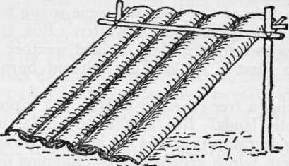
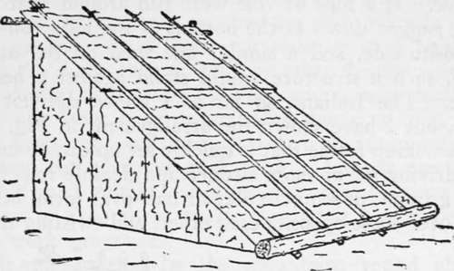
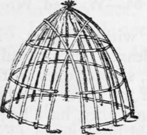
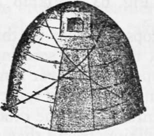
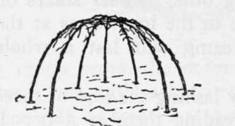
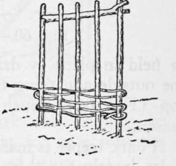

Tomahawk Shelters. Axemen's Camps. Caches. Masked Camps. Part 3
Description
This section is from the book "Camping And Woodcraft", by Horace Kephart. Also available from Amazon: Camping and Woodcraft.
Tomahawk Shelters. Axemen's Camps. Caches. Masked Camps. Part 3
For neater and more permanent jobs the bark must be flattened, and the rough outer bark must b« removed (except birch, which is always smooth). tonly the tough, fibrous, soft inner bark being used.
Fig. 59. Bark Tilt.
For rough work the outer bark may simply be "rossed" off with a hatchet, but for nice jobs the bark should be treated as described below.
If only a moderate-sized sheet is needed, the tree may not have to be felled. First girdle the tree just above the swell of the butt, by cutting through into the sapwood. Then girdle it again as high up as you can reach. Connect these two rings by a Vertical slit through the bark. Now cut into wedge-shape the larger end of a four-foot length of sapling; this is your "spud" or barking tool. With it gently work the bark free along one edge of the upright slit, and thus proceed around the tree till the whole sheet falls off. If the girdles are 5 feet apart, a tree 2 feet in diameter will thus yield a sheet about 5 x 6J feet, and a 3-foot tree will afford one 5 x gJ/2 feet. The bark is laid on the ground for a few days to dry in the sun, and is then soaked in water, which supples it and makes the inner bark easy to temove from the outer.
The frame for a bark lean-to is like that in Fig. 57 or Fig. 58. The roof is laid in courses, beginning at the bottom, and overlapping like shingles. It is secured in place by weight-poles. The sheets of bark at the sides can be tied to stakes by using bark strapsor held in place by driving other slender stakes on the outside and tying them to the inner ones at the top (Fig. 60). Such a camp will last a whole season.
Fig. 60. Bark Lean-to.
A bark teepee is made by lashing the tops of three poles loosely together, spreading them as a tripod, laying other poles against them with their butts radiating in a circle, covering with bark as above, and holding it in place with other poles laid against the outside. A more commodious circular lodge (more head-room for its size) was formerly used by the Algonquin tribes of the East. It was of beehive shape (Figs. 61 and 62), and was covered with skins or bark. The butts of the poles were driven into the ground and the tops bent over and tied together. Inner hoops were added as shown in the illustration, and the two crossed poles in front left openings for a doorway below and a smoke-vent above. If a rope or vine were run around near the top, pegged down at the bottom of the lodge on the opposite side, and a similar one used on the other side, such a structure would stand against a heavy gale. The Indians, so far as I know, did not do this, but I have shown the arrangement in Fig. 62.
Fig. 61. Beehive Lodge Frame.
Fig. 62. Beehive Lodge (covered).
A wikiup frame that is quickly set up can be made by driving six or more slender and flexible rods into the ground, in semi-circular or half-oval form, bending over those opposite each other, and twisting their tops together so that they hold without tying. In a thicket of seedlings, I have cleared out a circular space, bent over some of the tall, slender ones on the margin of this space, trimmed off the lower brancheSj interwoven the others, and so, in a jiffy, have had a wikiup frame that no wind could blow down (Fig. 63). The covering would be bark, evergreen boughs, or whatever I could rustle that would serve the purpose. A small fire built close in front would soon warm the little cubby. If there are prospects of rain, the top should not be bent over so far, but sloped like the one in Fig. 61.
Fig. 63. Wikiup Frame.
Fig. 64. Wattled Work.
Wattled Work
A frame of any shape may be wattled to serve as foundation for a lasting thatch, or for daubing with clay, Bed bottoms and other movable articles can be made in the same way. It also makes good fencing around a camp in a wild hog country. To illustrate the process, let us suppose you want to make a spring bed-frame to hold hay, browse, or whatever your mattress stuff may be. As many sticks as are required are driven firmly into the ground (make holes for them with a pointed stick). Then take willows or other flexible wands, previously suppled by soaking, and weave them in and out from stake to stake as shown in Fig. 64. To keep the outermost stakes from drawing together, cut a strong stick with a fork at one end and a notch cut in the other and set it between the stakes to keep them apart, shoving it higher up as the work progresses.
Slab Camps
In the mountains round about where I live there are many slab camps made by the native hunters and herdsmen. They last for years, and are welcome shelters for any wanderers who know their location or who chance to come upon them when the weather is bad. Very often the mountaineers go far up into the wilds without blankets or shelter cloths, carrying only their guns, ammunition, frying pan, tin cups, and "some rations in a tow sack." This, too, in freezing weather. But I omitted one thing that they always take along: a full-size axe. Having that indispensable tool, they can get along without tent or bedding, no matter what kind of weather may ensue. From chestnut, basswood, ash, spruce, pine, balsam, or other suitable wood, they split out, with axe and gluts a lot of 9-foot slabs. A stout ridge pole is laid across heavy forked posts or in notches cut in two adjoining trees to which the pole is withed fast. The slabs are laid, overlapping lengthwise, from ridge to ground. A big log fire is kept going all night in front of the shelter. Usually that is all. It must be bitter weather that would urge a southern mountaineer to enclose the sides of such a camp—in his vocabulary there's no such word as "draughts,"
Continue to:
- prev: Tomahawk Shelters. Axemen's Camps. Caches. Masked Camps. Part 2
- Table of Contents
- next: Tomahawk Shelters. Axemen's Camps. Caches. Masked Camps. Part 4